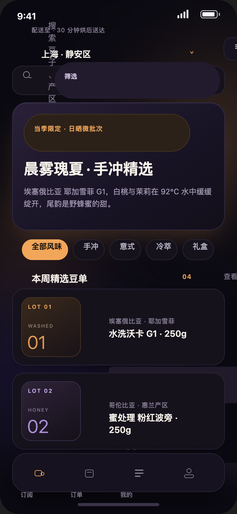

修复前 · 条件 A

纯文本基线（旧编译器）
无显式填充的子 Frame 被默认填为纯白
#ffffff + padding:16，遮盖深绿渐变 Hero 横幅，导致白字几乎不可读。
修复后 · 条件 A

纯文本基线（新编译器）
子容器默认透明、内边距归零，Hero 深烘底色与浅米色卡片层次完整呈现，零白块伪影。
修复前 · 条件 B
参考图 + 文本（旧编译器）

行内搜索占位文案未获得水平
fill 伸缩，被压成单字竖排并顶出顶部地址栏；底栏图标文字错位。
修复后 · 条件 B

参考图 + 文本（新编译器）
父布局感知
hug/fill 生效：搜索栏横向舒展，完整迁移 Aura 深空炭黑与琥珀金视觉语言，129 层 95% AutoLayout。